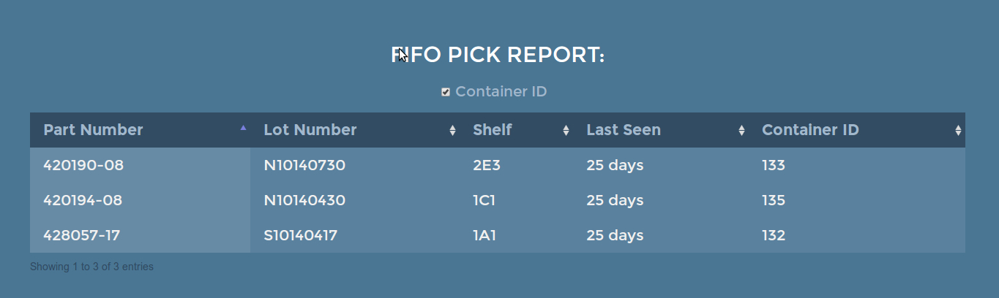
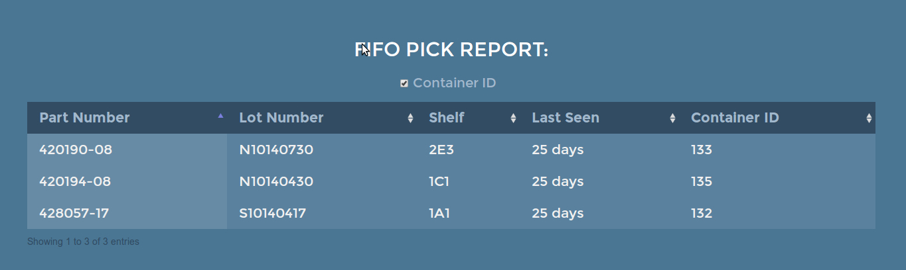
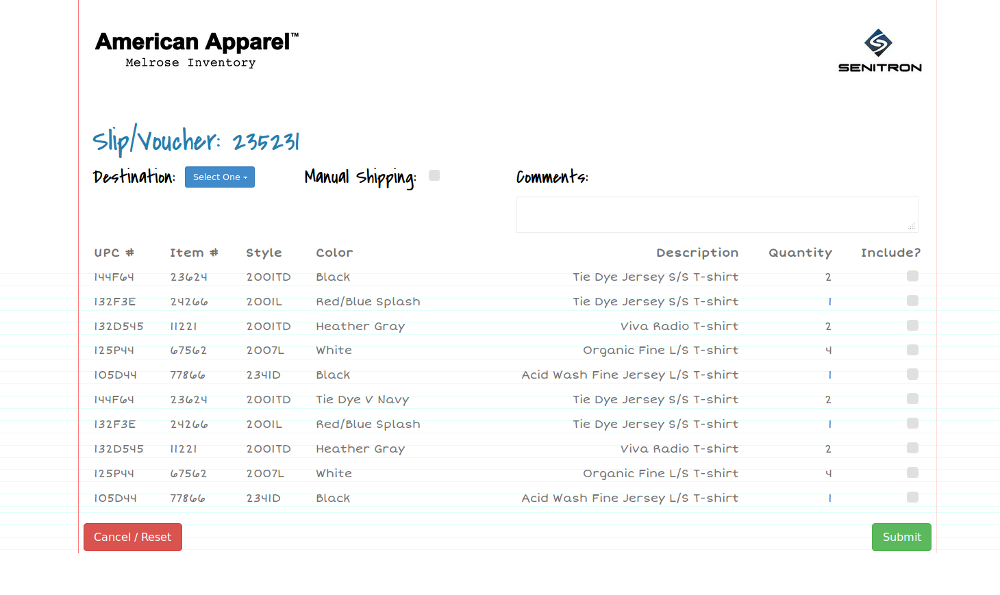
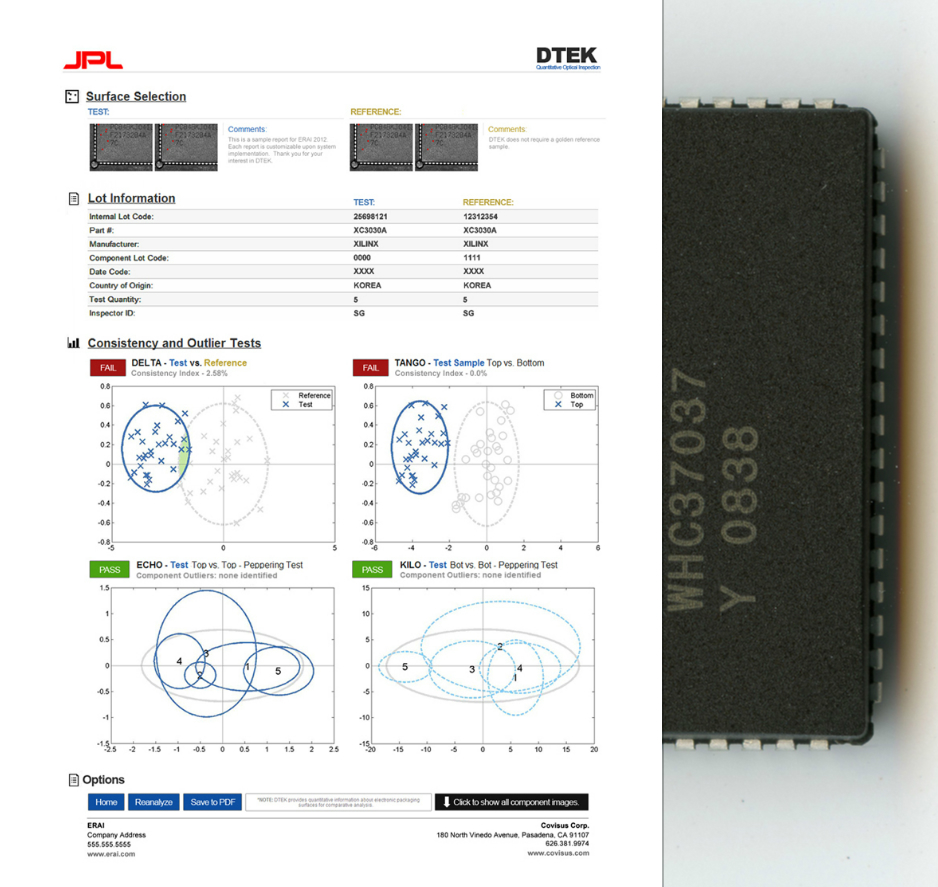
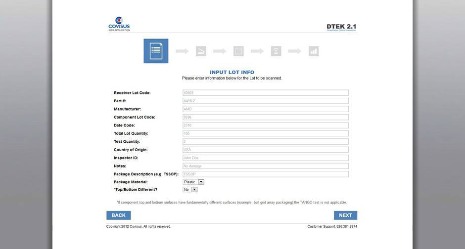
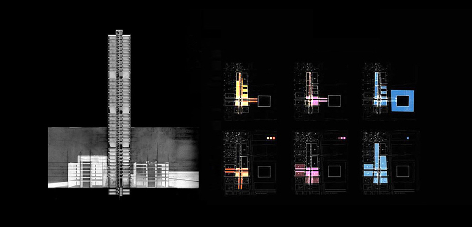

2014 Senitron RFID Inventory Tracking
UI/UX - HTML & CSS (w/ SASS) in Ruby/Rails framework - PostgreSQL- Foundation - Git
Senitron is a leading developer of RFID (radio frequency identification) software and hardware, with a focus on inventory visibility and tracking. Senitron provides continuous real-time information RFID tags in large numbers and dense populations (100,000+ tags). Using a network of RFID readers, hubs, and antennas, tagged inventory can be tracked with close to 100% accuracy in real time. Below are screenshots of the web applications developed for pilot programs of early adopters like Verizon, Intuitive Surgical, & American Apparel.
Visit website...

 

At Intuitive Surgical, the Senitron system is set up in rows, bays, and shelves to track warehouse inventory using the "first in, first out" method of organization. The grid shown in the UI above is representative of the warehouse floor. As equipment is taken or moved from a shelf, location, duration, and other key metrics are recorded in real time. It is also possible for users to choose a shelf of interest to see what inventory is currently stocked.

After more than six months of performance testing in select American Apparel locations, the retailer recently began chain-wide deployment of the Senitron system, which utilizes fixed RFID antennas mounted among the store's ceiling track lights read more...
+
2013 Covisus Quantitative Optical Analysis
3D Design & Development - UI/UX - HTML, CSS, & jQuery in Ruby/Rails framework - Bootstrap
Covisus, through its proprietary DTEK technology, can track and determine conformance of physical items to original manufacturing condition without the use of external tags. Material surfaces have a randomized structure at the micrometer and nanometer scale. Like a fingerprint, an iris scan, or a snow flake, these patterns are unique and intrinsic to each individual item and cannot be predicted or replicated
Visit website...




+
2013 Chromologic LLC Style Guideline, Website, & SEO
Wordpress - SEO
A new company style guideline was created for ChromoLogic LLC and Covisus Corporation. Google's SEO guide was also followed in a successful organic SEO campaign designed to increase relevant search engine results. Tools for optimization included XML sitemap and robot files, organizing site links, submitting to open online directories, and optimization of descriptive titles and meta data.
Visit website...

+
2011-2012 Other Projects


